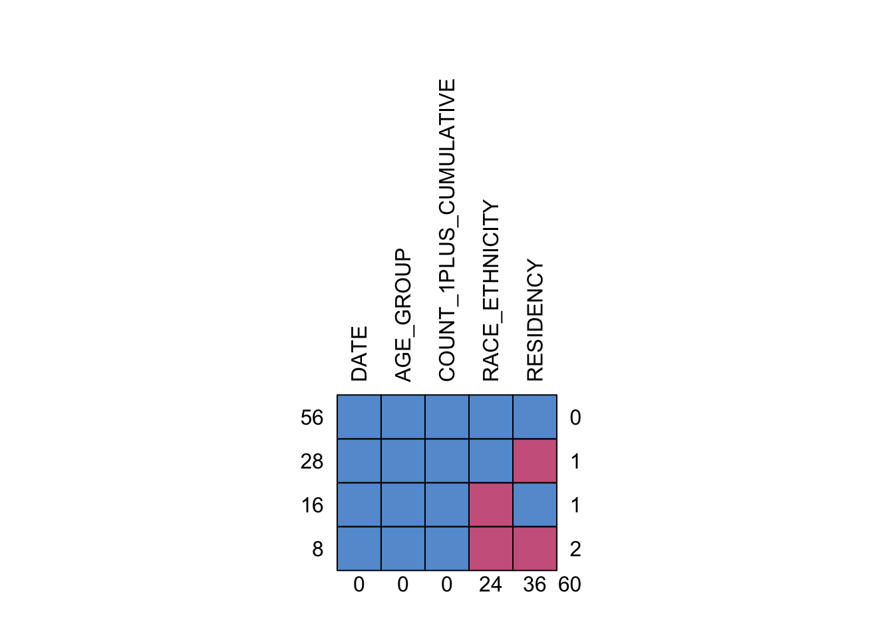
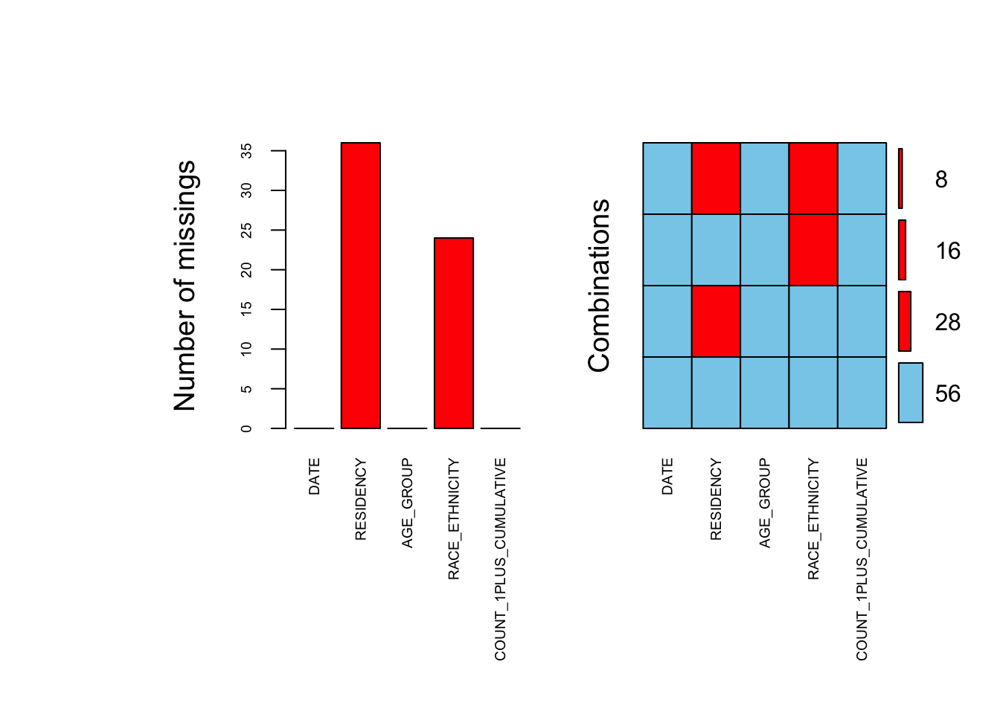
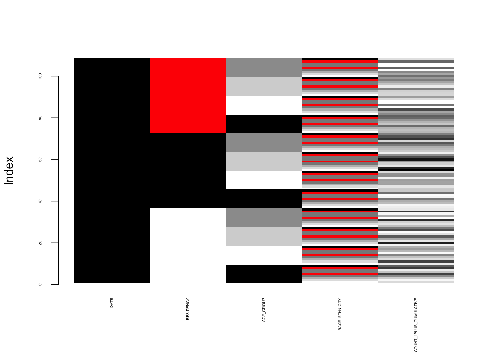

Chapter 3 Data
3.1 Sources
which is one of the official websites of data provided by NYC Health Department. Our data is real-time (with 3-day lag) and population-level because of the wide coverage of government institution and the suspension of immunization reporting consent. However, patients with laboratory-confirmed COVID-19 are not represented by the data. Data regarding racial and ethnic groups is collected based on long-term structural racism instead of biological or personal preference, so our data is objective rather than subjective.
Our data have several levels for both doses (dependent variables) and people (independent variables). And our data are mostly cumulative, as we want to find out the overall vaccination situation at any time. As we do data cleaning and transformation for data exploratory analysis, we will mainly focus on:
- Dependent variables:
- not take any vaccines
- partially vaccine
- fully vaccine
- take booster
- Independent variables:
- age
- race
- borough
- gender
3.2 Cleaning / transformation
File by-residency-demo.csv
the residency column has ‘unknown’ missing data; the race column has ‘other’ and ‘unknown’ missing data. We change ‘unknown’ and ‘other’ to NA, and delete all NA.
We noticed that the number of ‘Native American/Alaska Native’, ‘Native Hawaiian/Pacific Islander’, and ‘Multiracial’ is very small compared to other races, so we merged them into ‘other’ class.
The first column is useless in further analysis, so we delete it to get a simple and clear dataframe. Moreover, we changed all columns containing numbers to numeric type.
File trends-byage.csv
- we change the date format from
strtype toDatetype (month-date-year) for easier sort. - we changed all columns containing numbers to numeric type.
3.3 Missing value analysis
We firstly used complete.case() to identify the missing value in our dataframe.
## DATE RESIDENCY AGE_GROUP RACE_ETHNICITY COUNT_1PLUS_CUMULATIVE
## 5 10/20/22 NON-NYC All ages <NA> 73135
## 8 10/20/22 NON-NYC All ages <NA> 79609
## 14 10/20/22 NON-NYC 0-17 <NA> 3869
## 17 10/20/22 NON-NYC 0-17 <NA> 3309
## 23 10/20/22 NON-NYC 18-64 <NA> 58817
## 26 10/20/22 NON-NYC 18-64 <NA> 68190## [1] 60Then we use md.pattern() function in the mice package to generate a table showing the pattern of missing values in the dataframe.
0 indicates that there are no missing values in the variable’s column, and 1 indicates that there are missing values.
The first row gives the number (how many rows) there are no missing values.
The last row gives the number of missing values for each variable.
The first column gives the mode of each missing value.
The last column gives the number of variables for which there are missing values. In this dataset, there are a total of 60 missing data.

## DATE AGE_GROUP COUNT_1PLUS_CUMULATIVE RACE_ETHNICITY RESIDENCY
## 56 1 1 1 1 1 0
## 28 1 1 1 1 0 1
## 16 1 1 1 0 1 1
## 8 1 1 1 0 0 2
## 0 0 0 24 36 60Furthermore, we use aggr() and matrixplot() functions in the VIM(visualization of missing values) package to generate three different charts to show the more specific information of missing values for each variable.
Light color means small value, dark color means large value, default missing value is red. We can see that missing values only appear in in two variables: AGE_GROUP and COUNT_1PLUS_CUMULATIVE.

##
## Click in a column to sort by the corresponding variable.
## To regain use of the VIM GUI and the R console, click outside the plot region.